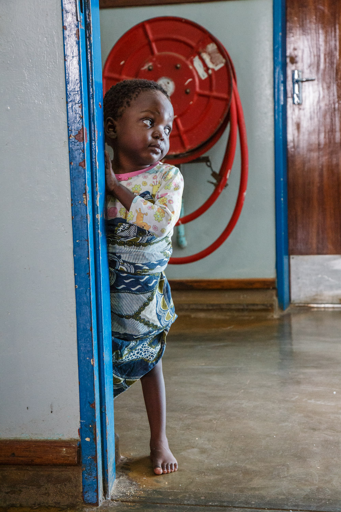
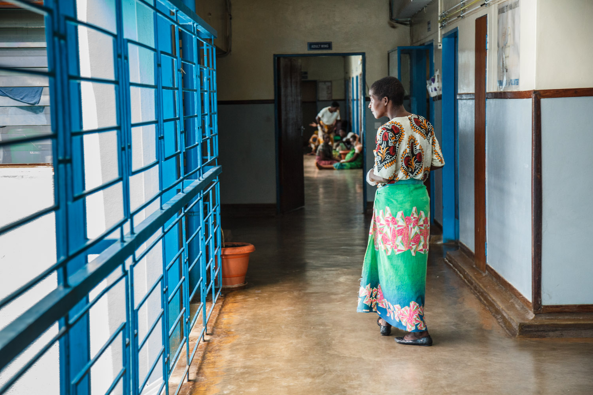

Jacqueline
Jacqueline (2-years-old) has just come out of the operating theatre. She suffered severe burns and had to have her second surgery in Kamuru Central Hospital in Malawi’s capital Lilongwe.
Smoke released by cooking in non-ventilated places is one of the world’s leading causes of illness and death.
According to the WHO, it can cause respiratory infections, lung cancer, heart disease and blindness, as well as short term suffering such as coughing, burning eyes, chest pain and headaches.
The prey of the silent killer in the kitchen? The people who spend the most time indoors: in the developing world, mainly women and children.
More than half of premature deaths among children under the age of five are due to pneumonia caused by breathing this smoke, and there is evidence of a link between indoor air pollution and low birth weight.
Dr Wezzie Mumba, Senior Medical Officer at the Bwaila Hospital, Lilongwe – Malawi’s capital city – sees how critical the situation is. ‘The women who do come to the clinics have severe lung problems,’ she says. Problems that usually only chainsmokers have.’
Only 0.4 per cent of the women in Malawi are smokers – but experts have likened just one hour of cook smoke to burning 400 cigarettes.
 The majority of burn victims in Malawi are under the age of 5
Warning: Some images contain graphic content.
Jacqueline (2-years-old) has just come out of the operating theatre. She suffered severe burns and had to have her second surgery in Kamuru Central Hospital in Malawi’s capital Lilongwe.
Loveness lies in her mother’s arms – around 80 per cent of her body was burned when boiling water fell on her. Unes, her mother, is 18-years-old and cringes when Loveness yelps. Her wounds hurt and cause her difficulty sleeping.

Mary suffers from epilepsy. Her face and hair burned when she fell in the fire – she remembers only pain. Now she is getting treatment on the Kamuzu hospital’s burn ward, she is on the mend.

Jacqueline’s mother Eliza and grandmother Aida holding the baby – still dizzy from surgery.

Head Nurse Chrissy Nyirenda inspects the medicine cabinet of her colleague.
Jonah is 16-years-old and suffers from epilepsy. He has been in the hospital for several months now. His mother Gloria explains that he fell in the fire when he got a fit.

Many burn victims suffer from epilepsy. Open fires are a dangerous trap for them.
Regina Phirie, 24-years-old, had a pot with burning fluid fall over her legs. Both legs are burned to the third degree. Regina’s mother keeps her company in the hospital and reads her from the Bible.
‘When I was cooking he fell in the fire’, says Aida, the mother of this two-year-old boy. Her son Chisommo’s lower back has been burned to the third degree. Nurse Chrissy laughs when she sees the boy: ‘when he came in he was so bad, but he is getting better now.’
Floor in Kamuzu Central Hospital in Lilongwe, Malawi’s capital. The hospital has a special burns ward. The patients are mainly women and children who were injured in accidents with open fires.
How does Dr Mumba recognize that the cause might be unclean cooking? ‘The hairs on their arms are all gone because of the open fire,’ he says.
Basic health care is free of charge in Malawi, but clinics are understaffed and underfunded: there are only two doctors available per 100,000 patients. Medication is also scarce.
Therefore, says Matron Phirie of Chintheche Rural Hospital in Nkhata Bay district in the north of the country, it is difficult to treat smoke related diseases. ‘We are unable to find out the causes – there is not even an x-ray machine in the clinic,’ she says, adding that health practitioners ‘just prescribe antibiotics – that is all we have,’ without really knowing what the underlying illness is.
‘We can only treat for chest infections and pneumonia on that presumption. But so many come back and back.’
 A lack of data prevents the ‘killer in the kitchen’ making it onto the country’s health agenda.
Not only do doctors need to know what caused a disease to treat it well, they also need data to measure the scale of the crisis – data that currently does not exist. And not having this data on a hospital or national level is crippling Malawi’s response: where there is no data, there is no information and often – no donor funding.
Dr Mumba believes that most funding is earmarked for the prevention and treatment of HIV/AIDS, malaria and tuberculosis. ‘That is where the donors give money for.’
Even with around 13,000 deaths per year attributed to household air pollution – 8.6 per cent of the country’s deaths – it seems difficult for the ‘killer in the kitchen’ to make it on to the country’s health agenda.
{kind=link}
{kind=link}
{kind=link}
{kind=link}
{kind=link}